Tree up to 8 m tall.
8 ಮೀ.ವರೆವಿಗೆ ಬೆಳೆಯುವ ಮರಗಳು.
8 മീറ്റര് വരെ ഉയരമുളള മരങ്ങള്.
மரங்கள் 8 மீ. உயரம் வரை வளரக்கூடியது
Bark smooth
ತೊಗಟೆ ನಯವಾಗಿರುತ್ತದೆ.
മിനുസമായ പുറംതൊലി.
மரத்தின் பட்டை வழுவழுப்பானது.
Branchlets slender, angular, densely, minutely subadpressed fulvous pilose.
ಕಿರುಕೊಂಬೆಗಳು ತೆಳುವಾಗಿದ್ದು ಕೋನಯುಕ್ತವಾಗಿರುತ್ತದೆ ಮತ್ತು ದಟ್ಟವಾದ, ನಸುಗೆಂಪಿನಿಂದ ಕೂಡಿದ ಹಳದಿ ಬಣ್ಣವುಳ್ಳ ಸೂಕ್ಷ್ಮವಾದ ಉಪ-ಅಪ್ಪು ರೋಮಗಳಿಂದ ಆವೃತವಾಗಿರುತ್ತವೆ.
കനത്തില്, അടങ്ങിയ സൂക്ഷ്മ ഫള്വസ് രോമങ്ങള് നിറഞ്ഞ, നേര്ത്ത കോണാകാരത്തിലുളള ഉപശാഖകള്.
சிறிய நுனிக்கிளைகள் மெல்லியது, குறுக்குவெட்டுத் தோற்றத்தில் கோணங்களுடையது, அடர்த்தியாக நுண்ணிய படர்ந்த உரோமங்களுடையது.
Leaves simple, opposite to subopposite, petiole 1-1.3 cm, planoconvex in cross section; lamina 5-12 x 2.5-5 cm, ovate to ovate-elliptic to elliptic-lanceolate, apex acute to acuminate, base acute to attenuate, margin entire, tomentose when young, later glabrous, coriaceous; trinerved basally or suprabasally, lateral nerves reaching leaf apex; tertiary_nerves horizontally_percurrent; higher order nerves minutely reticulate.
ಎಲೆಗಳು ಸರಳವಾಗಿದ್ದು,ಅಭಿಮುಖದಿಂದ ಉಪಅಭಿಮುಖವರೆಗಿನ ಮಾದರಿಯಲ್ಲಿ ಜೋಡನೆಗೊಂಡಿರುತ್ತವೆ;ತೊಟ್ಟುಗಳು 1 ರಿಂದ 1.3 ಸೆಂ.ಮೀ. ವರೆಗಿನ ಉದ್ದವಿದ್ದು ಅಡ್ಡ ಸೀಳಿದಾಗ ಸಪಾಟ ಪೀನಮಧ್ಯ ಆಕಾರದಲ್ಲಿರುತ್ತವೆ;ಪತ್ರಗಳು 5-12 x 2.5-5 ಸೆಂ.ಮೀ.ವರೆಗಿನ ಗಾತ್ರ ಹೊಂದಿದ್ದು ಅಂಡ, ಅಂಡ- ಅಂಡವೃತ್ತದಿಂದ ಅಂಡವೃತ್ತ - ಭರ್ಜಿ ಆಕಾರದಲ್ಲಿರುತ್ತವೆ. ಪತ್ರದ ತುದಿ ಚೂಪಾದುದರಿಂದ ಕ್ರಮೇಣ ಚೂಪಾಗುವ ಮಾದರಿಯಲ್ಲಿದ್ದು ಬುಡ ಚೂಪಾದುದರಿಂದ ಒಳಬಾಗುವ ರೀತಿಯಲ್ಲಿರುತ್ತದೆ;ಅಂಚು ನಯವಾಗಿರುತ್ತದೆ;ಪತ್ರಗಳ ಮೇಲ್ಮೈ ತೊಗಲನ್ನೋಲುವ ಮಾದರಿಯಲ್ಲಿದ್ದು ಎಳೆಯದಾಗಿದ್ದಾಗ ದಟ್ಟ ಮೃದು ತುಪ್ಪಳದಿಂದ ಕೂಡಿದ್ದು ನಂತರ ರೋಮರಹಿತವಾಗಿರುತ್ತವೆ; ಪತ್ರಗಳು 3 ಆಧಾರ ಅಥವಾ ಅಗ್ರ-ಆಧಾರ ನಾಳಗಳನ್ನು ಹೊಂದಿದ್ದು ಪಾರ್ಶ್ವ ನಾಳಗಳು ಎಲೆಯ ಅಗ್ರವನ್ನು ತಲುಪುತ್ತವೆ;ಮೂರನೇ ದರ್ಜೆಯ ನಾಳಗಳು ಲಂಬ ರೇಖೆಗೆ ಸಮಕೋನದಲ್ಲಿರುತ್ತವೆ ಹಾಗೂ ಎಲೆದಿಂಡಿಗೆ ಅಡ್ಡವಾಗಿ ಕೂಡುವ ರೀತಿಯವು.ಉನ್ನತ ದರ್ಜೆಯ ನಾಳಗಳು ಸೂಕ್ಷ್ಮ-ಜಾಲಬಂಧ ನಾಳ ವಿನ್ಯಾಸದಲ್ಲಿರುತ್ತವೆ.
ലഘുവായ ഇലകള് സമ്മുഖം തൊട്ട് ഉപസമ്മുഖം വരെയാകാം; ഛേദത്തില് ഒരുഭാഗം പരന്നും മറുഭാഗം ഉരുണ്ടുമിരിക്കുന്ന ഘടനയുളള ഇലഞെട്ടിന് 1 സെ.മീ തൊട്ട് 1.3 സെ.മീ വരെ നീളം; പത്രഫലകത്തിന് 5 സെ.മീ തൊട്ട് 12 സെ.മീ വരെ നീളവും 2.5 സെ.മീ തൊട്ട് 5 സെ.മീ വരെ വീതിയും, ആകൃതി അണ്ഡാകാരം തൊട്ട് അണ്ഡാകാര ദീര്ഘവൃത്തമോ ദീര്ഘവൃത്തീയ-കുന്താകാരം വരെയാകാം, പത്രാഗ്രം നിശിതം തൊട്ട് ദീര്ഘാഗ്രം വരെയാകാം, പത്രാധാരം നിശിതം തൊട്ട് നേര്ത്തവസാനിക്കുന്നതാവാം, അരികുകള് അവിഭജിതമാണ്, ഇളതായിരിക്കുമ്പോള് കനത്തില് രോമാവൃതമാണ്, പിന്നീട് അരോമിലവും, ചര്മ്മില പ്രകൃതം, ആധാരത്തില് നിന്നോ അപആധാരമോ മൂന്ന് ഞരമ്പുകളുലളതാണ്, പത്രാഗ്രത്തിലെത്തുന്ന പാര്ശ്വസിരകള്; തിരശ്ചീന പെര്കറന്റ് വിധത്തിലുളള ത്രിതീയ ഞരമ്പുകള്; മറ്റ് ചെറുഞരമ്പുകള് സൂക്ഷമജാലിതമാണ്.
இலைகள் தனித்தவை, எதிரடுக்கம் முதல் கிட்டதட்ட எதிரடுக்கம் போன்றவை; இலைக்காம்பு 1-1.3 செ.மீ., குறுக்குவெட்டுத் தோற்றத்தில் பிளேனோகான்வக்ஸ்; இலை அலகு 5-12 X 2.5-5 செ.மீ., முட்டை முதல் முட்டை-நீள்வட்டம் முதல் நீள்வட்டம்-ஈட்டி வடிவானது, அலகின் நுனி கூரியது முதல் அதிக்கூரியது, அலகின் தளம் கூரியது முதல் அட்டனுவேட், அலகின் விளிம்பு முழுமையானது, குறுத்திலைகள் உரோமங்களுடையது, முற்றிய இலைகள் உரோமங்களுடையவை, கோரியேசியஸ்; மூன்று நரம்புகளை அலகின் தளத்திலே அல்லது அலகின் தளத்திற்கு சற்று மேல் அமைந்தது, பக்கநரம்புகள் இரண்டும் அலகின் நுனி வரை செல்லாதது; மூன்றாம் நிலை நரம்புகள் விளிம்பை நோக்கிய கிடைமட்டத்தில் இணையான பெர்க்கரண்ட்; மற்ற சிறிய நரம்புகள் நுண்ணிய வலைப்பின்னல் போன்றவை.
Inflorescence axillary lax panicles, up to 15 cm long, tomentulous.
ಪುಷ್ಪಮಂಜರಿ ಸಡಿಲವಾಗಿದ್ದು ಅಕ್ಷಾಕಂಕುಳಿನ ಪುನರಾವೃತ್ತಿಯಾಗಿ ಕವಲೊಡೆಯುವ ಮಾದರಿಯದಾಗಿದ್ದು 15 ಸೆಂ.ಮೀ.ವರೆಗಿನ ಉದ್ದ ಹೊಂದಿದ್ದು ಸೂಕ್ಷ್ಮ ದಟ್ಟಮೃದುತುಪ್ಪಳ ಸಮೇತವಿರುತ್ತದೆ.
രോമിലമായ, 1.5 സെ.മീ വരെ നീളമുളള പൂങ്കുലകള് അയഞ്ഞ പാനിക്കിളുകളാണ്.
மஞ்சரி இலைக்கோணங்களில் நெருக்கமற்ற மலர்களுடைய பேனிக்கிள், 15 செ.மீ. நீளமானது, உரோமங்களுடையது.
Berry, ellipsoid, 1.5 cm long; fruiting_perianth_cup shallow with distinct persistent ovate lobes; seed 1.
ಬೆರ್ರಿಗಳು ಅಂಡವೃತ್ತ ಆಕಾರದಲ್ಲಿದ್ದು 1.5 ಸೆಂ.ಮೀ. ಉದ್ದವಿರುತ್ತದೆ;ಕಾಯಿಗಳ ಪುಷ್ಪಾವರಣದ ಬಟ್ಟಲು ಆಳವನ್ನು ಹೊಂದಿರುವುದಿಲ್ಲ ಮತ್ತು ಪ್ರಮುಖವಾದ ಹಾಗೂ ಶಾಶ್ವತವಾದ ಅಂಡಾಕಾರದ ದಳಗಳ ಸಮೇತವಿರುತ್ತವೆ ;ಬೀಜ 1.
ഒറ്റവിത്തുളള കായ, ഉറച്ചുനില്ക്കുന്ന വ്യക്തമായ അണ്ഡാകാര കര്ണ്ണങ്ങളുളള ആഴംകുറഞ്ഞ ഫലബാഹ്യദളക്കപ്പുളള, 1.5 സെ.മീ നീളമുളള ദീര്ഘഗോളാകാര ബെറിയാണ്.
முழுச்சதைகனி (பெர்ரி), நீள்வட்ட வடிவானது, 1.5 செ.மீ. நீளமானது; கனியிலுள்ள ப்பீரியான்ந்த் கோப்பை ஆழமில்லாதது, அதன் இதழ்கள் முட்டை வடிவானது; விதை ஒன்றுடையது
 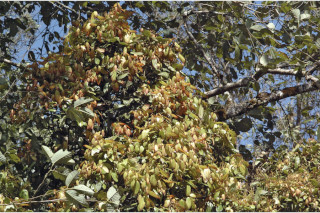
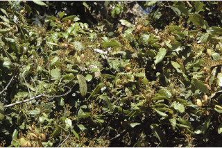
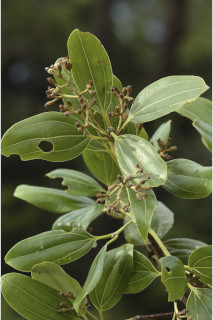
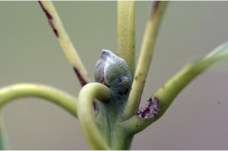
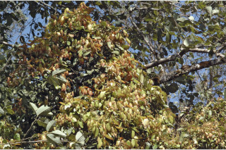
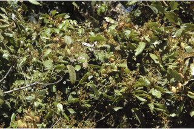
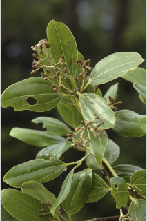
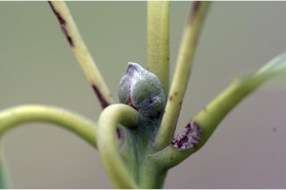
 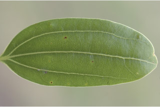
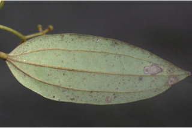
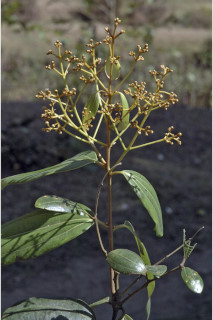
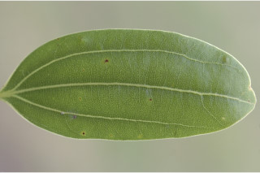
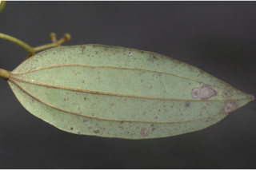
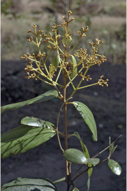
 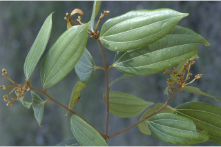
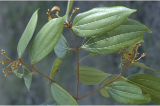
 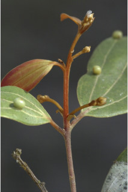
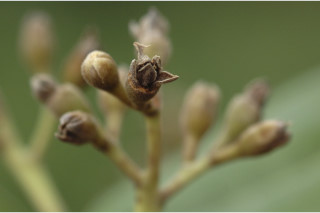
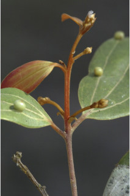
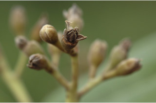